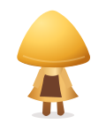
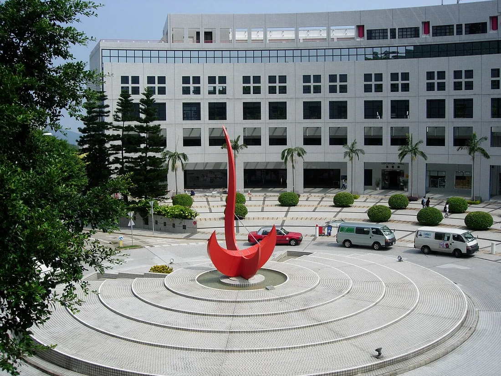

45

HKUST RED BIRD

100m+30 light1 stamp
Description: The Sundial Sculpture at the Piazza has become the icon of HKUST. Officially called the “Circle of Time”, it is often called the “Red Bird”.
Task: Take a selfie with the sundial